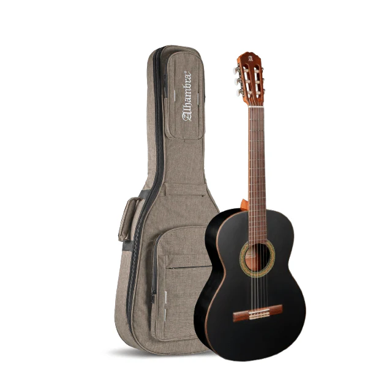
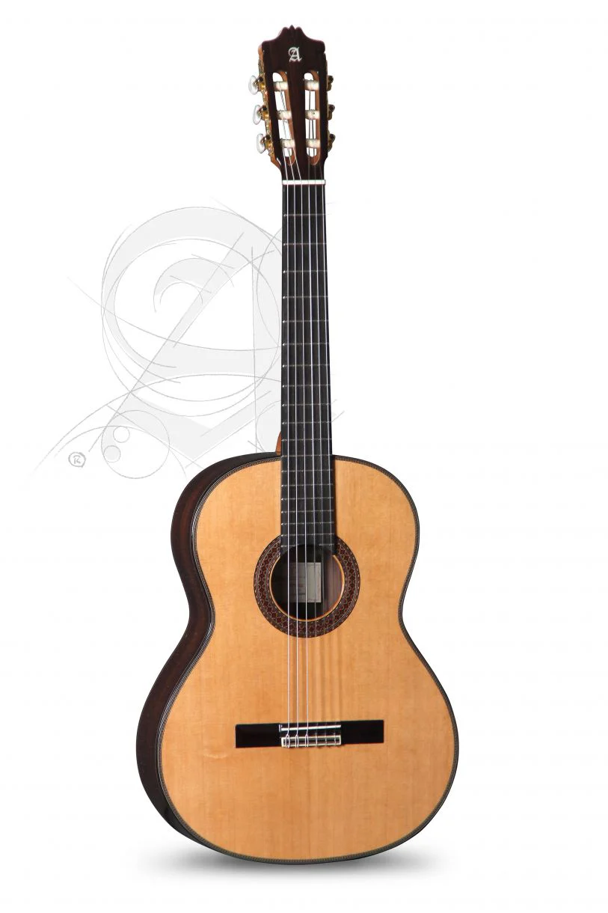
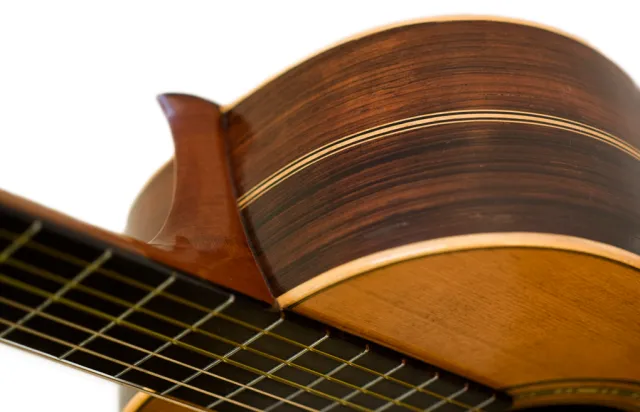

Alhambra 3C (версія “Black Satin” — тобто з чорним сатиновим фінішем) — чудовий вибір як для просунутих гітаристів, так і як солідний інструмент для навчання.
Модель Alhambra 4P Classic у натуральному відтінку – класичний корпус із елегантним оздобленням. Прекрасний вибір для тих, хто шукає баланс між якістю та доступністю.

Alhambra 7P Classic — концертна модель із суцільною верхньою декою з кедра, корпус із індійського палісандру. Висока якість деревини та майстерності.

Деталь: розетка навколо резонаторного отвору цієї гітари Alhambra. Цей декоративний елемент підкреслює акуратну обробку італійського стилю та бренд-етикетку всередині.

Гітара Alhambra у фламенко-стилі: жива верхня дека в теплому кольорі, корпус із плакучого тополя (sycamore) чи іншої характерної для фламенко деревини, вузький корпус. Стильний вибір для ритмічних стилів.

Модель Alhambra з вирізом (cutaway) для кращого доступу до верхніх ладів, з електронною системою підсилення (приклад: Fishman). Ідеально для сценічного виконання чи сучасних потреб.